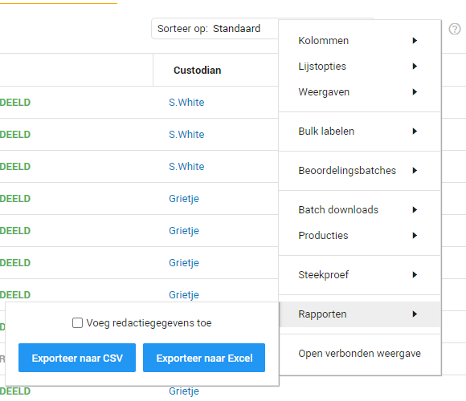

Na het produceren van de documenten kunt u een rapport laten maken van de geproduceerde documenten. In dit rapport staat bijvoorbeeld waar iets geannoteerd is en op basis waarvan dat gedaan is, maar ook op welke pagina er een redactie staat. Dit kan nuttig zijn om snel en gemakkelijk door de geproduceerde documenten heen te gaan.
U kunt een rapport aanvragen door naar de documentenlijst te gaan en daar op het tandwieltje te klikken. Vervolgens komt er een menu in beeld waar u de optie Rapporten aan kunt klikken. U
kunt nu kiezen of u de verkorte versie (samengevat) of de gedetailleerde versie van het rapport wil ontvangen.
Voor meer informatie kunt u naar Reports gaan.